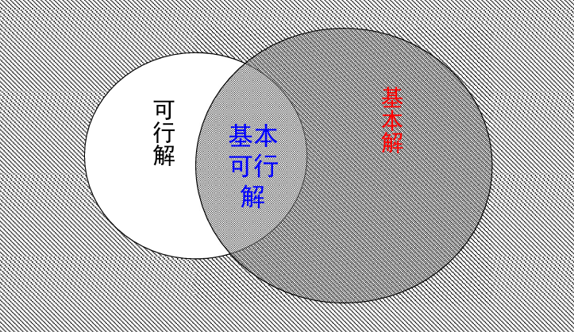

建模技术
本文最后更新于 2025年11月24日 下午
第一章
建模
定义：模型是对客观事物抽象出来的原型的替代物。
常见模型：实物模型、物理模型、符号模型（图表）。
数学建模：实际问题转化为数学问题。
数学建模的基本方法和步骤
基本方法
- 机理分析：客观事物的特性到内部机理的规律（白箱）
- 测试分析：量测数据的统计到数据拟合最好的模型（黑箱）
二者结合：机理分析建立模型结构，测试分析确定模型参数。
建模主要指机理分析
数学模型和数学建模
第一性原理：看透事物本质的根本方法。
数学建模的一般步骤：模型准备、假设、构成、求解、分析、检验、应用。
实践到理论再到实践。
特点：逼真性，条理性，可行性，渐进性，强健性，局限性，可转移性，非预制性。
优化建模
最小作用量原理：物理系统在从一个状态演化到另一个状态的过程中，会选择使作用量取得极值（通常是局部最小值）的路径。
例如，费马原理：光在传播过程中，无论是直线传播、反射还是折射，都遵循时间最短或路径最短的原理。
最优化问题的一般形式及分类
一般数学形式： minx ∈ Xf(x) > 优化问题的三要素：f(x)是目标函数，x是决策变量，X是约束集合/可行域。
可行域包含的点x ∈ X是可行解或可行点。 $$ \left\{ \begin{aligned} & \min && f(x) \\& \text{s.t.} && g_i(x) \leq 0, \; i = 1, \cdots, p \\& && h_j(x) = 0, \; j = 1, \cdots, q \end{aligned} \right. $$ 引入向量函数符号后： $$ \left\{ \begin{array}{ll} \min & f(x) \\ \text{s.t.} & g(x) \leq 0 \\ & h(x) = 0 \end{array} \right. $$
定义：
- 对于最优化问题，若有x* ∈ X，并且有：
f(x*) ≤ f(x), ∀x ∈ X
则称x*是最优化问题的整体最优解/极小点，f(x*)是整体最优值/极小值。
<则为严格最优解。
分类：
- 若f(x)，gi(x)，hj(x)皆为线性函数，才为线性规划（LP）；至少一个非线性，则为非线性规划（NLP）。
- 若没有gi(x)，hj(x)，则为无约束最优化问题。

一个优化问题可能属于多个类别。
机器学习问题
标准流程：数据、模型、算法-表现度量、算法-优化算法。
没有免费的午餐原理：该定理表明，在所有可能的问题中，平均而言，任何算法的性能都是相同的。（有得必有失，守恒，平衡）
奥卡姆剃刀原理：如无必要，勿增实体。
组合优化问题
定义：这类问题广泛存在于现实生活的各个领域，如物流、 金融、计算机科学、生物信息学等。它关注于在给定 的约束条件下，从一组可能的解中找出最优解。
1、旅行商问题(TSP)
在物流规划、电路板布线、生物学和交通规划等领域有重要应用。
常用穷举法，动态规划，贪心，遗传等启发式算法。
2、背包问题
在商业、组合数学、计算复杂性理论、密码学和应用数学等领域。
常用动态规划、分支限界法、遗传算法等。
3、指派问题
一类特殊的线性规划问题，它要求将n项任务分配给n个人去完成，每个人只能完成一项任务，且每项任务只能由一个人完成。目标是找 到一种分配方案，使得总成本（或总时间、总资源消耗等）最小。
在企业管理、资源分配、任务调度等领域有重要应用。
常用匈牙利算法等有效算法求解。
还有调度问题、切割问题、装箱问题…
第二章 连续最优化建模与应用
非线性规划基础
梯度∇f(x)
定义：f(x)的n个偏导数为分量的向量。 $$ \nabla f(x) = \left[ \frac{\partial f(x)}{\partial x_1}, \frac{\partial f(x)}{\partial x_2}, \cdots, \frac{\partial f(x)}{\partial x_n} \right]^T $$
−∇f(x)则为梯度下降方向，一般用于梯度下降法。
常用的梯度公式：
- f(x)为常数，则∇f(x)=0；
- f(x) = bTx，则∇f(x) = b；
- f(x) = x，则∇f(x) = I（单位阵）；
- f(x) = xTx，则∇f(x) = 2x；
- A为对称矩阵，f(x) = xTAx，则∇f(x) = 2Ax
n元二次函数
一般形式：$f(x_1, x_2, \cdots, x_n) = \frac{1}{2} \sum_{i=1}^n \sum_{j=1}^n a_{ij}x_i x_j + \sum_{i=1}^n b_i x_i + c$
加上$\frac{1}{2}$是xixj和xjxi重复计算。
矩阵形式：$f(x) = \frac{1}{2} x^T A x + b^T x + c$，其中A = AT
A是一个对称矩阵。
二次型：$f(x) = \frac{1}{2} x^T A x$
只保留了二次项
矩阵正定性：正定、半正定、负定、不定。
Hessian矩阵
定义：多元函数f(x)关于x的二阶梯度。 $$ \nabla^2 f(x) = \nabla(\nabla f(x)) = \begin{bmatrix} \dfrac{\partial^2 f(x)}{\partial x_1^2} & \dfrac{\partial^2 f(x)}{\partial x_2 \partial x_1} & \cdots & \dfrac{\partial^2 f(x)}{\partial x_n \partial x_1} \\ \dfrac{\partial^2 f(x)}{\partial x_1 \partial x_2} & \dfrac{\partial^2 f(x)}{\partial x_2^2} & \cdots & \dfrac{\partial^2 f(x)}{\partial x_n \partial x_2} \\ \vdots & \vdots & \ddots & \vdots \\ \dfrac{\partial^2 f(x)}{\partial x_1 \partial x_n} & \dfrac{\partial^2 f(x)}{\partial x_2 \partial x_n} & \cdots & \dfrac{\partial^2 f(x)}{\partial x_n^2} \end{bmatrix} $$
当f(x)的所有二阶偏导数连续时，即$\dfrac{\partial^2 f(x)}{\partial x_i \partial x_j}=\dfrac{\partial^2 f(x)}{\partial x_j \partial x_i}$时，Hessian矩阵是对称的。
Jacobi矩阵
定义：g(x)是一个向量值函数，Jacobi矩阵即为g(x)在x0处的导数。 $$ \nabla g(x_0) = \begin{bmatrix} \dfrac{\partial g_1(x_0)}{\partial x_1} & \dfrac{\partial g_1(x_0)}{\partial x_2} & \cdots & \dfrac{\partial g_1(x_0)}{\partial x_n} \\ \dfrac{\partial g_2(x_0)}{\partial x_1} & \dfrac{\partial g_2(x_0)}{\partial x_2} & \cdots & \dfrac{\partial g_2(x_0)}{\partial x_n} \\ \vdots & \vdots & \ddots & \vdots \\ \dfrac{\partial g_m(x_0)}{\partial x_1} & \dfrac{\partial g_m(x_0)}{\partial x_2} & \cdots & \dfrac{\partial g_m(x_0)}{\partial x_n} \end{bmatrix} $$ Taylor展开
定义：f(x)是连续可微的，p是向量，那么 f(x + p) = f(x) + ∇f(x + tp)Tp, 其中 0 < t < 1
二阶连续可微，即可进一步$f(x + p) = f(x) + \nabla f(x)^T p + \frac{1}{2} p^T \nabla^2 f(x + tp) p$
无约束可微最优化问题
最优性条件 $$ \begin{aligned} & \min && f(x) \\ & \text{s.t.} && x \in \mathbb{R}^n \end{aligned} $$
定理（必要条件）：设f在点x* ∈ Rn处可微，若x*是minf(x)的局部最优解，则∇f(x*) = 0。
梯度为0的点称为函数的驻点，可能是极小/极大，可能都不是，即为鞍点。
定理（二阶充分必要条件）：设f在点x* ∈ Rn处的Hessian矩阵∇2f(x*)存在，
- 必要条件：若x*是f的一个局部极小点，==>∇f(x*) = 0，那么∇2f(x*) ≽ 0半正定；
- 充分条件：若∇f(x*) = 0，∇2f(x*) ≻ 0正定，那么x*是minf(x)的严格局部最优解。
设点x*满足一阶最优性条件，且该点处的Hessian矩阵不是半正定的，则x*不是一个局部极小点。
事实上，该点是一个鞍点。
示例：
利用最优性条件解下列问题： min f(x) = (x12 − 1)2 + x12 + x12 − 2x1 1、先求驻点：x* = (1, 0)
2、Hession矩阵为： $$ \nabla^2 f(x) = \begin{bmatrix} 12x_1^2 - 2 & 0 \\ 0 & 2 \end{bmatrix} $$ 代入得： $$ \nabla^2 f(x) = \begin{bmatrix} 10 & 0 \\ 0 & 2 \end{bmatrix} $$ 正定，故x* = (1, 0)是局部极小点。
最小二乘法
损失函数： $$ J_l(\theta) = \frac{1}{2} \sum_{i=1}^n \left( h_\theta(x^{(i)}) - y^{(i)} \right)^2 $$ 应用：曲线拟合、图像配准、信号去噪。
线搜索算法

xk + 1 = xk + Δxk
Δxk = λkdk
dk为第k轮搜索方向，λk为第k轮步长。
下降方向
定义：若存在δ > 0，d ∈ Rn，d ≠ 0，使得f(x + td) < f(x)，∀t ∈ (0, δ)，则称向量d是函数f(x)在点x处下降方向。
若f(x)在x可导，则−∇f(x)就是f(x)在x处下降最快的方向。
最优步长： f(xk + λkdk) = minλ ≥ 0f(xk + λdk)
λk即为最优步长。
步骤：
- 给出初始点x0，令k = 0；
- 按照某种规则，确定dk；
- 按照某种规则，确定λk，使得f(xk + λkdk) < f(xk)；
- 令xk + 1 = xk + λkdk，k := k + 1；
- 判断xk是否满足停止条件，是则停止，否则转第2步。
算法收敛
定义：算法按dk和λk产生的迭代点列xk + 1 = xk + λkdk，如果点列{xk}收敛于最优解x*，则称该算法收敛。
如果进一步有$f(x0)>f(x1)> >f(x^k)> $，则称该算法为下降迭代算法。
常用的收敛性判断条件：
- ∥xk + 1 − xk∥ < ε1
- |f(xk + 1) − f(xk)| < ε2
收敛速度： $$ \frac{\|x^{k+1} - x^*\|}{\|x^k - x^*\|^\alpha} < \lambda, \quad \lambda, \alpha > 0 $$ 则称xk的收敛阶为α。
α = 1，线性收敛（k充分大）。
1 < α < 2，超线性收敛。
α = 2，二阶收敛。
常用最优化算法
梯度法（最速下降法）
定理：设f(x)在点x̄处可微，若存在d ∈ Rn，使得
∇f(x̄)Td < 0 则称向量d是f在点x̄处的下降方向。
−∇f是下降速度最快的方向，称为最速下降方向。
函数在某点的梯度不为0，则该梯度方向必定与过该点的等值面垂直。
方向：dk = −∇f(xk)
步长：
- 可直接选取固定的λk；
- 或者最优步长；
- 也可以依赖线搜索算法。
特点：线性收敛，容易产生扭摆现象造成早停，当xk距离最优点x*较远时，速度快；而接近最优点时，速度下降。
示例：
用最速下降法求解下列问题： $$ \min \quad f(x) = 2x_1^2 + x_2^2,\quad初点x^1 = (1,1)^T,\varepsilon = \frac{1}{10} $$
$$
$$
1、第一次迭代：$\nabla f(x^1) = \begin{bmatrix}4x_1 \\2x_2\end{bmatrix}$，$d^1=-\nabla f(x^1)=\begin{bmatrix}-4 \\-2\end{bmatrix}$，$\|d\| = 2\sqrt{5} > \frac{1}{10}$。
从x1出发，沿方向d1进行一维搜索，求步长λ1 ,即φ(λ) = minλ ≥ 0f(xk + λdk) = 2(1 − 4λ)2 + (1 − 2λ)2，令φ′(λ) = 0，解得$\lambda=\frac{5}{18}$，$x^2=x^1+\lambda_1d^1=\begin{bmatrix}-\frac{1}{9} \\\frac{4}{9}\end{bmatrix}$
2、不断迭代直到∥d∥ ≤ ε停止。
牛顿法
定理：为了由xk产生xk + 1，在xk附近用二次函数Q(x)近似f(x)，用Q(x)的极小点作为xk + 1。
$$ f(x) \approx Q(x) = f(x^k) + \nabla f(x^k)^T (x - x^k) + \frac{1}{2}(x - x^k)^T \nabla^2 f(x^k)(x - x^k) $$
点xk处的泰勒展开。
$$ Q(x) = f(x^k) + g_k^T \cdot (x - x^k) + \frac{1}{2}(x - x^k)^T G_k (x - x^k) $$
其中 gk = ∇f(xk), Gk = ∇2f(xk)
即∇Q(x) = gk + Gk(x − xk) = 0，若Gk正定，即Gk ≻ 0，则有xk + 1 = xk − Gk−1gk，即为牛顿迭代公式。
即dk = −Gk−1gk，λk = 1。
特点：
- 收敛速度快，为二阶局部收敛。（需要二阶正定）
- 初始点最好选在最优点附近，一般先用最速下降法得到较低精度的解，再用牛顿法加速。
示例：
用牛顿法求解下列问题： min f(x) = 2x12 + x22, 取初点x1 = (0, 1) 1、第一次迭代：$\nabla f(x^1)=\begin{bmatrix}-4 \\2\end{bmatrix}$，$\nabla^2 f(x^1)=\begin{bmatrix}12 & 0 \\0 & 2\end{bmatrix}$。
迭代更新：$x^2 = x^1 - \nabla^2 f(x^1)^{-1} \nabla f(x^1)=\begin{bmatrix}\frac{1}{3} \\0\end{bmatrix}$。
其中矩阵的逆就是取倒数，$\nabla^2 f(x^1)^{-1}=\begin{bmatrix}\frac{1}{12} & 0 \\0 & \frac{1}{2}\end{bmatrix}$。
2、不断迭代。
拟牛顿法（变尺度法）
用正定矩阵Hk代替Gk−1，则有： xk + 1 = xk − λkHk∇f(xk)
当Hk = I时，xk + 1 = xk − λk∇f(xk)，最速下降法。
当Hk = Gk−1，λk = 1时，牛顿法。
拟牛顿条件： Hk + 1Δgk = Δxk
gk为对f(x)在xk的梯度。
步长可用最优步长。
优点：
- 只需用到函数的一阶梯度
- 下降算法，全局收敛
- 不需要求逆矩阵（计算量小）
- 一般可达超线性收敛（速度快）
衍生：
- DFP算法：
$$ H_{k+1} = H_k + \frac{\Delta x_k^T \Delta x_k}{\Delta x_k^T \Delta g_k} - \frac{H_k \Delta g_k \Delta g_k^T H_k}{\Delta g_k^T H_k \Delta g_k} $$ 示例：
用DFP方法求解下列问题： min 2x12 + x22 − 4x1 + 2 初始点以及初始矩阵为： $$ x^{(1)} = \begin{bmatrix} 2 \\ 1 \end{bmatrix},\quad H_1 = \begin{bmatrix} 1 & 0 \\ 0 & 1 \end{bmatrix} $$ 1、第一次迭代：
$g = \begin{bmatrix} 4(x_1 - 1) \\ 2x_2 \end{bmatrix} = \begin{bmatrix} 4 \\ 2 \end{bmatrix}$，$d^{(1)} = -H_1 g_1 = \begin{bmatrix} -4 \\ -2 \end{bmatrix}$，沿着方向一维搜索求得步长为$\lambda_1=\frac{5}{18}$。
$x^2=x^1+\lambda_1d^1=\begin{bmatrix} \frac{8}{9} \\ \frac{4}{9} \end{bmatrix}$。
2、不断迭代，得到最优解。
- BFGS算法
步长线搜索算法
精确线搜索算法：λk为最优步长。
非精确线搜索：依照线搜索准则。
- Armijo准则
- Goldstein准则
- Wolfe准则
线搜索回退法
约束非线性最优化
最优性条件 $$ \left\{ \begin{array}{ll} \min & f(x) \\ \text{s.t.} & g(x) \geq 0 \\ & h(x) = 0 \end{array} \right. $$
KKT必要条件
构造拉格朗日函数： L(x, μ, λ) = f(x) − μTh(x) − λTg(x)
μ和λ即为拉格朗日乘子
x*是问题的局部最优解，则KKT条件可以表示为： $$ \nabla f(x^*) = \lambda^T \nabla g(x^*) + \mu^T \nabla h(x^*) \quad \text{稳定性条件} \\ h(x^*) = 0 \quad\text{原问题可行性} \\ g(x^*) \geq 0 \quad\text{原问题可行性} \\ \lambda \geq 0 \quad\text{对偶可行性} \\ \lambda^T g(x^*) = 0 \quad\text{互补松弛条件} $$
示例：
考虑以下非线性规划问题： $$ \begin{aligned} & \min \quad x_1 \\ & \text{s.t.} \quad \left\{ \begin{array}{l} 3(x_1 - 3)^2 + x_2 \geq 0 \\ (x_1 - 3)^2 + x_2^2 - 10 = 0 \end{array} \right. \end{aligned} $$ 检验以下各点是否为局部最优解？ $$ x^1 = \begin{bmatrix} 2 \\ -3 \end{bmatrix},\quad x^2 = \begin{bmatrix} 4 \\ -3 \end{bmatrix} $$ 检查x1： $$ \nabla f(x^1) = \begin{bmatrix} 1 \\ 0 \end{bmatrix},\quad \nabla g(x^1) = \begin{bmatrix} -6 \\ 1 \end{bmatrix},\quad \nabla h(x^1) = \begin{bmatrix} -2 \\ -6 \end{bmatrix} $$ 按照KKT条件，f(x1) − μh(x1) − λg(x1)解得$\mu=-\frac{1}{38}$，$\lambda=-\frac{3}{19}$，不满足对偶可行性，故不为KKT点。
同理检查x2。
KKT充分条件
定理：设f为凸函数，gi为凹函数，hj为线性函数。对于$𝑥^*\in𝑆$，若f，gi，hj在点x*处可微，并且KKT条件成立，则x*为优化问题的全局极小点。
惩罚函数法
思想：迭代过程中，罚函数法通过对不可行点施加惩罚，迫使迭代点向可行域靠近。一旦迭代点成为可行点，则这个可行点就是原问题的最优解。根据不同的罚函数有不同的罚方法。
也成为序列无约束极小化方法，将有约束优化转换为一系列无约束优化问题进行求解。
外点法（外惩法）
对于有约束原问题： $$ \min f(x) \\ \text{s.t.} \quad g_i(x) \leq 0, \quad i = 1, \cdots, m $$ 转换为： $$ \min f(x) \\ \text{s.t.} \quad x \in D $$
其中D = {x ∣ g(x) ≤ 0}
构造一个φk(x)，使得 φk(x) = f(x) + λkp(x) 其中λ1 < λ2 < ⋯ < λk( ↑ ) → +∞，并且
- p(x) = 0，当x ∈ D时；
- p(x) > 0，当x ∉ D时。
其中φk(x)：增广函数；p(x)：惩罚函数；λk：惩罚因子。
定理：
当φk(x)有最优解x*,并且x*(λk) ∈ D，即则x*(λk)也是原问题𝑓(𝑥) 的最优解。
示例：
用外点罚函数求解： $$ \begin{aligned} & \min \quad (x_1 - 3)^2 + (x_2 - 2)^2 \\ & \text{s.t.} \quad 4 - x_1 - x_2 \geq 0 \end{aligned} $$ 1、构造罚函数： $$ F(x, \sigma)= \begin{cases} (x_1 - 3)^2 + (x_2 - 2)^2, & x_1 + x_2 - 4 \leq 0 \\ (x_1 - 3)^2 + (x_2 - 2)^2 + \sigma(x_1 + x_2 - 4)^2, & x_1 + x_2 - 4 > 0 \end{cases} $$ 2、用解析方法求这个无约束问题： $$ \frac{\partial F(x, \sigma)}{\partial x_1} = \begin{cases} 2(x_1 - 3), & x_1 + x_2 \leq 4 \\ 2(x_1 - 3) + 2\sigma(x_1 + x_2 - 4), & x_1 + x_2 > 4 \end{cases} $$
$$ \frac{\partial F(x, \sigma)}{\partial x_2} = \begin{cases} 2(x_2 - 2), & x_1 + x_2 \leq 4 \\ 2(x_2 - 2) + 2\sigma(x_1 + x_2 - 4), & x_1 + x_2 > 4 \end{cases} $$
令偏导数 = 0，解得$x(\sigma) = \begin{bmatrix} \dfrac{5\sigma + 3}{2\sigma + 1} \\[1em] \dfrac{3\sigma + 2}{2\sigma + 1} \end{bmatrix}$，同时求得$\nabla^2 F(x, \sigma) = \begin{bmatrix}2(\sigma + 1) & 2\sigma \\2\sigma & 2(\sigma + 1)\end{bmatrix}$。
由于σ > 0，所以∇2F(x, σ)是正定阵，因此x(σ)是F(x, σ)的极小点。
3、求原问题最优解：
$x^* = \lim_{\sigma \to \infty} x(\sigma) = \left( \frac{5}{2},\ \frac{3}{2} \right)^T$，$f(x^*)=\frac{1}{2}$。
内点法（内惩法）
使得迭代点是在可行域点集内部移动的，对接近可行域边界上的点施加越来越大的惩罚，对可行域边界上的点施加无限大的惩罚，阻碍迭代点穿越边界。
等式约束不适用。
此时 $$ \begin{aligned} D &= \{x \mid g_i(x) \leq 0,\ i = 1, \dots, m\} \\ &= \partial D \cup \operatorname{int} D = \text{边界点集} \cup \text{内点集} \end{aligned} $$ 构造一个φk(x)，使得 φk(x) = f(x) + μkq(x) 增广拉格朗日乘子法
考虑等式约束问题： $$ \begin{aligned} &\min f(x) \\ &\text{s.t. } h(x) = 0 \end{aligned} $$ 构造增广拉格朗日函数： $$ \varphi(x, v, \mu) = f(x) + \sum_{i=1}^{l} v_i h_i(x) + \frac{1}{2} \sum_{i=1}^{l} \sigma_i h_i^2(x) $$
其中，v为乘子；σ为惩罚因子。
示例：
用广义乘子法求解： $$ \begin{aligned} & \min \quad 2x_1^2 + x_2^2 - 2x_1x_2 \\ & \text{s.t.} \quad x_1 + x_2 - 1 = 0 \end{aligned} $$ 1、定义增广Lagrange函数： $$ \varphi(x, v, \sigma) = 2x_1^2 + x_2^2 - 2x_1x_2 - v(x_1 + x_2 - 1) + \frac{\sigma}{2}(x_1 + x_2 - 1)^2 $$ 取σ = 2, v1 = 1，求解min φ(x, 1, 2)，令关于x1和x2的偏导为0，解得$x^1=\begin{bmatrix} \frac{1}{2} \\ \frac{3}{4} \end{bmatrix}$。
2、更新乘子，$v^2=v^1-\sigma h(x^1)=1-2×\frac{1}{4}=\frac{1}{2}$，求解$min \quad \varphi(x, \frac{1}{2}, 2)$，重复迭代。
第三章 线性规划
线性规划及其概念
$$ \left\{ \begin{aligned} & \min && f(x) \\& \text{s.t.} && g_i(x) \leq 0, \; i = 1, \cdots, p \\& && h_j(x) = 0, \; j = 1, \cdots, q \end{aligned} \right. $$
若f(x)，gi(x)，hj(x)皆为线性函数，即为线性规划（LP）。
LP模型的标准型 $$ \begin{aligned} &\max \quad Z = c^{\mathrm{T}}x \\ &\text{s.t.} \quad \begin{cases} Ax = b \\ x \geq 0 \end{cases} \end{aligned} $$
目标函数最大，约束条件等式，决策变量x非负，资源限量b非负。
如果xj为自由变量，可令xj = xj+ − xj−，两个分量都非负即可。
不等式变等式引进松弛变量和剩余变量，例如Ax < = b转换Ax + si = b（松弛变量）；Ax > = b转换Ax − si = b（剩余变量）。
定理1：若LP存在可行域，则一定为凸集。
凸集：设K是n维欧式空间的一个点集，x1 ∈ K，x2 ∈ K，x1 ≠ x2，K中这两点连线上的所有点x = αx1 + (1 − α)x2 ∈ K, (0 < α < 1)，则称K为凸集。
定理2：若LP的可行域非空且有界，则必定有最优解。
定理3：若LP有最优解，则最优解一定可以在其可行域的某个顶点上取得。
定理4：LP问题可行域的顶点与其基本可行解一一对应。
设m个线性无关列是A前m列，B = (P1, P2, ..., Pm)，则Pj为基向量，与其对应的变量xj则为基变量。
示例： $$ \begin{aligned} \left\{ \begin{array}{l} x_1 + 2x_2 \leq 8 \\ x_2 \leq 2 \\ x_1, x_2 \geq 0 \end{array} \right. \quad \Rightarrow \quad \left\{ \begin{array}{l} x_1 + 2x_2 + x_3 = 8 \\ x_2 + x_4 = 2 \\ x_1, x_2, x_3, x_4 \geq 0 \end{array} \right. \end{aligned} $$ 则 $$ A = \begin{pmatrix} 1 & 2 & 1 & 0 \\ 0 & 1 & 0 & 1 \end{pmatrix} = (P_1, P_2, P_3, P_4) $$
$$ b=\begin{pmatrix} 8\\ 2 \end{pmatrix} $$
就有 $$ B_1=(P_1,P_2)=\begin{pmatrix} 1&2\\ 0&1 \end{pmatrix}, B_2=(P_1,P_4)=\begin{pmatrix} 1&0\\ 0&1 \end{pmatrix},同理B_3-B_5 $$
没有(P1, P3)因为P1 = P3，所以B的个数 ≤ Cnm，n为变量个数，m为等式个数。
Ax = b的所有解为： $$ x = \begin{bmatrix} x_B \\ x_N \end{bmatrix} = \begin{bmatrix} B^{-1}b - B^{-1}Nx_N \\ x_N \end{bmatrix} $$ 令所有非基变量xN = 0，得到一个特解$x=\begin{bmatrix}B^{-1}b\\0\end{bmatrix}$称为基本解。基变量xB = B−1b。
有一个B就有一个基本解，个数也 ≤ Cnm，但基本解不一定可行，只有xB = B−1b ≥ 0时，基本解为基本可行解，此时B为可行基；只是 > 0称为非退化的可行解。

单纯形法
思路：从一个基本可行解出发，设法得到另一个更好的基本可行解，直到目标函数达到最优时，基本可行解即为最优解。
步骤：
- 求一个基本可行解，称为初始基本可行解
- 最优条件检验。即检验任一基本可行解是否为最优解，是则停止计算，否则下一步。
- 确定改善方向，求得另一个更好的基本可行解，转上一步，直到最优解为止。
示例： $$ \begin{aligned} \max \quad& z = 50x_1 + 100x_2 \\ \text{s.t.} \quad & \begin{cases} 2x_1 + 2x_2 \leq 600 \\ 5x_1 + 2.5x_2 \leq 1000 \\ x_1 \leq 250 \\ x_1, x_2 \geq 0 \end{cases} \end{aligned} $$ 1、转化为标准型 $$ \begin{aligned} \max \quad & z = 50x_1 + 100x_2 + 0s_1 + 0s_2 + 0s_3 \\ \text{s.t.} \quad & \begin{cases} x_1 + x_2 + s_1 &= 300 \\ 2x_1 + x_2 + s_2 &= 400 \\ x_1 + s_3 &= 250 \\ x_1, x_2, s_1, s_2, s_3 &\geq 0 \end{cases} \end{aligned} $$ 2、提取系数，填入表格
| 迭代次数 | 基变量 | CB | x1 50 |
x2 100 |
s1 0 |
s2 0 |
s3 0 |
b | 比值 $\frac{b_i}{a_{i2}}$ |
|---|---|---|---|---|---|---|---|---|---|
| 0 | s1 | 0 | 1 | 1 | 1 | 0 | 0 | 300 | $\frac{300}{1}$ |
| s2 | 0 | 2 | 1 | 0 | 1 | 0 | 400 | $\frac{400}{1}$ | |
| s3 | 0 | 1 | 0 | 0 | 0 | 1 | 250 | \ | |
| zj = CBNj | 0 | 0 | 0 | 0 | 0 | ||||
| σj = cj − zj | 50 | 100 | 0 | 0 | 0 |
x2对应的正检验数σj最大，所以选择x2作为换入变量，在这个基础上的最小比值是s1对应的，所以选择s1作为换出变量，进行下一次迭代。
| 迭代次数 | 基变量 | CB | x1 50 |
x2 100 |
s1 0 |
s2 0 |
s3 0 |
b | 比值 $\frac{b_i}{a_{i2}}$ |
|---|---|---|---|---|---|---|---|---|---|
| 1 | x2 | 100 | 1 | 1 | 1 | 0 | 0 | 300 | |
| s2 | 0 | 1 | 0 | -1 | 1 | 0 | 100 | ||
| s3 | 0 | 1 | 0 | 0 | 0 | 1 | 250 | ||
| zj | 100 | 100 | 100 | 0 | 0 | ||||
| σj | -50 | 0 | -100 | 0 | 0 |
x2对应的CB就是第一次的σj。
要把基变量其他行中的x2消除，现在的x2行是x1 + x2 + s1 = 300，对于s2行，消去x2就变成x1 − s1 + s2 = 100，其他行同理。
当前没有正的检验数可以带来增益，即当前为最优解。
因为此时x1，s1为非基变量，所以x1*=0，s1=0，由x1 + x2 + s1 = 300可以得出x2*=300，即最优解x1*=0，x2*=300，带入z=30000。
引入的剩余/松弛变量无法构成一个单位矩阵的时候，为了获得单位矩阵，引入人工变量，采用大M法/两阶段法。
大M法
思路：当把人工变量从基变量中替换出来成为非基变量，剔除人工变量的剩余部分即为原问题的初始基本可行解。以后的计算与单纯形表解法相同，Ｍ只需认定是一个很大的正数即可。
示例： $$ \max \quad z = 2x_1 + 3x_2 - 5x_3\\ \text{s.t.} \quad \begin{cases} x_1 + x_2 + x_3 = 7 \\ 2x_1 - 5x_2 + x_3 \geq 10 \\ x_i \geq 0, \quad i = 1,2,3 \end{cases} $$
因为只引入一个剩余变量x4的时候初始基变量一个都没有，所以需要引入人工变量，在大M法中引入的x5，x6视为一个无限大的正数。
$$ \max \quad z = 2x_1 + 3x_2 - 5x_3 - Mx_5 - Mx_6\\ \text{s.t.} \quad \begin{cases} x_1 + x_2 + x_3 + x_5 = 7 \\ 2x_1 - 5x_2 + x_3 - x_4 + x_6 = 10 \\ x_i \geq 0, \quad i = 1,2,3,4,5,6 \end{cases} $$
| 迭代次数 | 基变量 | Ci | x1 2 |
x2 3 |
x3 -5 |
x4 0 |
x5 −M |
x6 −M |
b | 比值 $\frac{b_i}{a_{i2}}$ |
|---|---|---|---|---|---|---|---|---|---|---|
| 0 | x5 | −M | 1 | 1 | 1 | 0 | 1 | 0 | 7 | $\frac{7}{1}$ |
| x6 | −M | 2 | -5 | 1 | -1 | 0 | 1 | 10 | $\frac{10}{2}$ | |
| zj | −3M | 4M | −2M | M | −M | −M | ||||
| σj | 3M + 2 | −4M + 3 | 2M − 5 | −M | 0 | 0 |
最大的σj为x1，换入x1，计算比值…下面迭代按照单纯形法求解。
两阶段法
步骤：
求解一个辅助线性规划
目标函数取所有人工变量之和，并取最小化。
约束条件为原问题中引入人工变量后包含一个单位矩阵的标准型的约束条件。
求原问题的最优解，在第一阶段已经求得原问题的一个初始基本可行解的基础上，继续用单纯形法求解原问题的最优解。
内点算法可以降低单纯形法的复杂度。
第四章 整数规划
定义：如果一个线性规划模型中的部分/全部的决策变量xi取整数值，则称该线性规划模型为整数线性规划模型。
类型：纯整数规划/混合整数规划/0-1整数规划
模型求解
分支定界法
在整数规划中， 找到实际的整数解通常是困难的，因此我们首先求解其松弛问题，这样我们可以得到一个对原整数问题的最优解的估计。
松弛问题得到上界，分解问题得到下界，依据某个算法得到上/下界的序列，逐步缩小/放大上/下界。
求最优解：
1、若松弛问题无可行解，则整数规划无可行解；
2、若松弛问题最优解符合整数，则为整数规划最优解；
3、不符合整数，设最优值为z̄，初始定界，分枝，更新定界，比较和剪枝，重复直到无解或有最优解。
示例： $$ \begin{aligned} \max \quad & z = 40x_1 + 90x_2 \\ \text{s.t.} \quad & \begin{cases} 9x_1 + 7x_2 \leq 56 \\ 7x_1 + 20x_2 \leq 70 \\ x_1, x_2 \geq 0,\ \text{且为整数} \end{cases} \end{aligned} $$ 1、化解为松弛问题： $$ \begin{aligned} \max \quad & z = 40x_1 + 90x_2 \\ \text{s.t.} \quad & \begin{cases} 9x_1 + 7x_2 \leq 56 \\ 7x_1 + 20x_2 \leq 70 \\ x_1, x_2 \geq 0 \end{cases} \end{aligned} $$ 2、使用单纯形法求解松弛问题： $$ \begin{aligned} \max \quad & z = 40x_1 + 90x_2 \\ \text{s.t.} \quad & \begin{cases} 9x_1 + 7x_2 +x_3= 56 \\ 7x_1 + 20x_2 +x_4= 70 \\ x_1, x_2 \geq 0 \end{cases} \end{aligned} $$ 解得： $$ \begin{cases} x_1 = \dfrac{630}{131} \\ x_2 = \dfrac{238}{131} \end{cases} $$
$$ \max z = \frac{46620}{131} $$
3、分支定界：
定界：$\bar{z}=\frac{46620}{131}$，$\underline{z}=0$，$\underline{z}\leq z^*\leq \bar{z}$
分支：$x_1 \leq \left\lfloor \frac{630}{131} \right\rfloor = 4$和$x_1 \geq \left\lfloor \frac{630}{131} \right\rfloor+1 = 5$
这个$\frac{630}{131}$，可以任选一个不为整数x来分支。
- 分支1
$$ \begin{aligned} \max \quad & z = 40x_1 + 90x_2 \\ \text{s.t.} \quad & \begin{cases} 9x_1 + 7x_2 \leq 56 \\ 7x_1 + 20x_2 \leq 70 \\ x_1 \leq 4 \\ x_1, x_2 \geq 0 \end{cases} \end{aligned} $$
解得： $$ \begin{cases} x_1 = 4 \\ x_2 = 2.1 \end{cases} $$
max z = 349
定界：z̄ = 349，$\underline{z}=0$，$\underline{z}\leq z^*\leq \bar{z}$
- 分支2
$$ \begin{aligned} \max \quad & z = 40x_1 + 90x_2 \\ \text{s.t.} \quad & \begin{cases} 9x_1 + 7x_2 \leq 56 \\ 7x_1 + 20x_2 \leq 70 \\ x_1 \geq 5 \\ x_1, x_2 \geq 0 \end{cases} \end{aligned} $$
解得： $$ \begin{cases} x_1 = 5 \\ x_2 = 1.57 \end{cases} $$
max z = 341.4
更新定界：z̄ = 341.4，$\underline{z}=0$，$\underline{z}\leq z^*\leq \bar{z}$
分支1：x2 ≤ ⌊2.1⌋ = 2，x2 ≥ ⌊2.1⌋ + 1 = 3
- 分支1.1
解得 $$ \begin{cases} x_1 = 4 \\ x_2 = 2 \end{cases} $$
max z = 340
更新定界为：z̄ = 341.4，$\underline{z}=340$，$\underline{z}\leq z^*\leq \bar{z}$
因为两个解都符合整数条件，所以此时更新的是下界。
- 分支1.2
解得 $$ \begin{cases} x_1 = 1.43 \\ x_2 = 3 \end{cases} $$
max z = 327.4
剪枝，因为327.4 < 340
重复分支定界法。
最终求得最终解为 $$ \begin{cases} x_1 = 4 \\ x_2 = 2 \end{cases} $$
max z = 340
割平面法
当问题涉及到大量的整数变量或二进制变量时，基本思想是通过逐步引入限制条件（割平面）来逐渐逼近问题的整数解，从而提高解的质量。
也是结合单纯形法，当求得一个非整数最优解的时候，写出当前基变量所在行的约束等式，构造切割方程，再带入求解。
第五章 图论建模与应用
图论与应用问题建模概念
研究图和线组成的“图形”问题，例如哥尼斯堡七桥，哈密尔顿回路，四色定理。
应用：随机图论、网络图论、代数图论、 拓扑图论、极值图论。
图
概念：描述事物或对象之间联系或相互作用状态，由若干个给定的顶点、及若干条连接两个顶点的边所构成的图形。 < V, E>表示，|V|表示顶点集合，|E|表示边集合。
分类：
无向/有向图：每条边都是无向/有向边。
有向边也叫弧
简单图：既不含平行边也不含环的图
平行边：关联的一对顶点的边多于1条。
赋权图：每条边都附有一个实数（权）
记作G = (V, E, W)
度
无向图中，与顶点v关联的边的数目（环算两个）称为v的度，记作d(v)
无向图中所有顶点的度数之和是边数的两倍
有向图中，从v引出的度为出度d+(v)，对应入度d−(v)，d(v) = d+(v) + d−(v)
有向图中也满足，同时所有顶点的入读之和等于所有顶点的出度之和，都为边数。
推论：任何图的奇顶点的总数必定为偶数。
道路
迹：各边相异的道路
轨道：各顶点相异的道路，记为P(v0, vk)
回路：起点和终点重合的道路。
圈：起点和终点重合的轨道，根据长度有奇/偶圈。
距离：u和v的最短轨道之长
矩阵表示
- 邻接矩阵
$$ w_{ij} = \begin{cases} 1, & \text{顶点 } v_i \text{ 与 } v_j \text{ 有边} \\ 0, & i = j \text{ 或顶点 } v_i \text{ 与 } v_j \text{ 无边} \end{cases} $$
当为赋权图的时候，1变成边的权。
- 关联矩阵
$$ m_{ij} = \begin{cases} +1, & \text{顶点 } v_i \text{ 与边 } e_j \text{ 关联} \\ 0, & \text{顶点 } v_i \text{ 与边 } e_j \text{ 不关联} \end{cases} $$
环算两个
当为有向图的时候， $$ m_{ij} = \begin{cases} 1, & \text{顶点 } v_i \text{ 是弧 } a_j \text{ 的} {\text{始端}} \\ -1, & \text{顶点 } v_i \text{ 是弧 } a_j \text{ 的} {\text{末端}} \\ 0, & \text{顶点 } v_i \text{ 与弧 } a_j \text{ 不关联} \end{cases} $$
- 可达矩阵（有向图）
$$ P_{ij} = \begin{cases} 1, & v_i \text{ 可达 } v_j \\ 0, & \text{否则} \end{cases} $$
最大流问题
城市视为顶点，管道视为边，容量视为权，输送线路抽象成一个有向赋权图G(V, E, C)。
同时要记录实际流量f(u, v)（小于容量c(u, v)）
弧的类型
- 饱和弧：f(𝑢, 𝑣) = c(𝑢, 𝑣)
- 非饱和弧：f(𝑢, 𝑣) < c(𝑢, 𝑣)
- 零流弧：f(𝑢, 𝑣) = 0
- 非零流弧：f(𝑢, 𝑣) > 0
链
容量网络G中顶点序列(u1, u2, ..., un, v)为一条链，要求相邻两个顶点之间有一条弧，从起点s到终点t为正方向。
前向弧：和链的方向一致的弧，记为P+
反向弧：和链的方向相反的弧，记为P−
增广路径
设𝑓是一个容量网络𝐺中的一个可行流，𝑃是从𝑠到𝑡的一条链，若𝑃满足下列条件：
（1）在𝑃的所有前向弧 < 𝑢, 𝑣>上，0 ≤ 𝑓(𝑢, 𝑣) < 𝑐(𝑢, 𝑣)，即𝑃中每一条弧都是非饱和弧；
（2）在𝑃的所有后向弧 < 𝑢, 𝑣>上，0 < 𝑓(𝑢, 𝑣) ≤ 𝑐(𝑢, 𝑣)，即𝑃中每一条弧都是非零流弧。
则称P为增广路径。
增广路算法：从任何一个可行流开始，沿着增广路径对网络流进行增广，直到网络中不存在增广路为止。
Ford-Fulkerson算法
广度优先搜索
不断寻找增广路径，直到不存在，无法增加流量为止。
Edmonds-Karp算法
Dinic算法：深度优先搜索、剪枝
预流推进算法
最小割问题
割：在容量网络𝐺(𝑉, 𝐸)中，设𝐸’ ⊆ 𝐸，如果在𝐺中删去𝐸’后不再连通，则 称𝐸’是𝐺的割。割将𝐺的顶点集𝑉划分成两个子集𝑆和𝑇，将割记为(𝑆, 𝑇)。
如果割所划分的两个顶点子集满足s ∈ S，t ∈ T，则为S − T割。
横跨：弧 < u, v>，其中u ∈ S, v ∈ T。这个弧就横跨割。
S − T图：
- 一个源点和一个汇点
- 每条边都有一个非负的权值
- 容量c(u, v)等于0，说明不存在边
割的容量：(S, T)为G(V, E)的一个割，容量为所有前向弧的容量的总和，最小割即为容量最小的割。
统计容量的时候，不统计反向弧的容量。
最大流的流值≤最小割的容量
净流量：f(S, T)，统计净流量的时候，反向弧是负值。
网络流：网络流的流量等于任何割的净流量，小于等于任何割的容量。
最大流最小割定理：对于容量网络G(V, E)，其最大流的流量等于最小割的容量。
对偶问题：求最小割的容量就转化为求最大流的流量，求边或者子集的时候，在最大流的时候，从顶点s出发，如果0 < f(u, v) < c(u, v)，就把这个边加入割，可达的顶点加入S，最后没加入的其他顶点加入T。
第六章 进化算法与应用
智能优化方法是一种新兴的、源于生命科学的启发式随机优化方法。
分类：
- 进化计算：遗传算法
- 群体智能：蚁群算法
- 物理原理：模拟退火算法
进化算法及其概念
概念：模拟自然界生物进化过程与基于自然选择和自然遗传等生物进化机制的求解优化问题的自组织、自适应的随机搜索技术和算法。通过选择、重组和变异实现优化问题的求解。
基本框架：遗传算法。
生物学基础：遗传、变异、进化。
遗传算法及其应用
基本思想：在求解问题时从多个解（初始种群）开始，然后通过一定的法则进行逐步迭代（选择、交叉、变异）以产生新的解。
个体：个体是指种群中的单个元素。可以用 0、1组成的长度为1的串来表示。
染色体：对个体编码后得到的字符串。每一位称为基因，若干有效信息构成基因组。
适应度函数：对个体判断的法则。
种群：多个解的集合。
遗传操作：产生新的种群。选择、交叉、变异。
基本要素：编码、适应度函数的设计、初始种群的设计、遗传操作设计、控制参数（代数/概率）设计。
编码
常见编码算法：位串编码（二进制/格雷）、实数编码、字符编码。
- 二进制编码：若干二进制表示个体。
$2^{串长}>需要的等长小区间个数=\frac{区间长度}{需要精度}$
编码的时候还可以平移区间，例如从[−1, 2]到[0, 3]，只需要最后解码的时候−1即可。
优点：类似生物染色体组成、遗传易实现、模式数多。
缺点：汉明悬崖(0111/1000)降低搜索效率、要求给出精度、高维优化搜索效率低。
- 格雷编码：对二进制编码进行变换，有效解决汉明悬崖问题。
G = B ⊕ (B > > 1)
- 实数编码：将每个个体的染色体都用某一范围的一个实数（浮点数）来表示，其编码长度等于该问题变量的个数。也称为真值编码。
适用于多维、高精度要求的连续函数优化问题。
初始种群
通常采用随机法、启发法从一定数量的个体中挑选最好的个体加入。
种群规模是固定好的，一直不变，一般取20-100。
适应度函数
目标函数为max，Fitt(f(x)) = f(x)，为min，$Fitt(f(x))=\frac{1}{f(x)}$。
还有非负和界限值情况，但总之就是适应度最大的是最优个体。
尺度变换：在算法初期运行中，为了维护种群多样性，可以降低种群个体之间的适应度差异程度；在算法运行后期中，为了保证优秀的个体遗传下去，要提高个体之间的适应度差异程度。因此需要对适应度函数进行尺度变换。有线性尺度变换(f′ = af + b)、乘幂尺度变换(f′ = fK)和指数尺度变换(f′ = e−af)。
遗传操作
1）选择
以个体的适应度值为评价指标，对种群中个体进行优胜劣汰。
- 比例选择：个体被选中的概率和适应度大小成正比。轮盘赌选择、繁殖池选择。 Boltzmann选择法。
2）交叉
在选择基础上，两个相互配对的染色体按照某种方式对部分基因进行互相交换，从而形成新的个体。
产生新个体的最主要方法。也是区别其他进化算法的重要特征。
- 二进制交叉：单点交叉（该点后的两个个体的部分结构进行互换，并生成两个新的个体）、双点交叉（两个点之间）、均匀交叉（均匀概率抽一些位）等方法。
- 实值交叉：部分（选择部分分量）/整体（0.5的概率）离散交叉、算术交叉。
3）变异
对选中个体的染色体编码串中的某些基因座上的基因值，用该基因座的其他等位基因来替换，以形成新的个体。增加种群多样性。
- 二进制变异：随机选定变异位，0-1互相变化。
- 实值变异：基于位置（第二个变异位基因移动到第一个的前面）、基于次序（交换）。
蚁群算法及其应用
又称蚂蚁算法，一种用来在图中寻找优化路径的概率型算法。在解决离散优化问题有优势，例如旅行商问题、调度问题、指派问题。
正反馈效应：某一路径经过的蚂蚁越多，信息素浓度越来越大，后来者选择该路径的概率就越大。最终所有的蚂蚁都在最优路径上行进，找出最优路径。
基本思想：在解空间中独立的搜索可行解，解的质量越高，在“行走路线”上留下的信息激素就越多，选择它的路径也逐渐增多，最终在正反馈的作用下找到最优解。
原理：初始化->构建解空间->更新信息素->循环迭代
本质：
- 选择机制：信息素越多，被选择概率越大。
- 更新机制：路径上面的信息素会随蚂蚁的经过而增长，同时也随时间的推移逐渐挥发消失。
- 协调机制：蚂蚁间通过环境中的信息素来协同工作。
主要体现在转移概率公式和信息素更新公式。
优点：并行、正反馈（收敛快）、鲁棒性好、无需人工调整。
缺点：陷入局部最优解、计算量大、参数设置困难、适用不广。
示例：用蚁群算法求解一个四城市的TSP问题的执行步骤，四个城市A、B、 C、D之间的距离矩阵如下： $$ W = d_{ij} = \begin{bmatrix} \infty & 3 & 1 & 2 \\ 3 & \infty & 5 & 4 \\ 1 & 5 & \infty & 2 \\ 2 & 4 & 2 & \infty \end{bmatrix} $$ 将m只蚂蚁随机的放到n个城市，同时将每只蚂蚁的第一个元素设置为当前所在的城市。初始时刻，各路径上的信息素相等，即τij(0) = C。
假设蚂蚁种群的规模𝑚 = 3，参数α = 1，β = 2，ρ = 0.5。
1、初始化
贪心算法得到路径ACDBA，Cnn = f(ACDBA) = 1 + 2 + 4 + 3 = 10，$\tau_0=\frac{m}{C^{nn}}=0.3$。
2、路径构建
为每只蚂蚁随机选择出发城市，假设蚂蚁1选择城市A，蚂蚁2选择城市B，蚂蚁3选择城市D。
为每只蚂蚁选择下一城市。以蚂蚁1为例，当前城市=A，可访问城市集合allowed1 = BCD，计算蚂蚁1分别选择BCD作为下一访问城市的概率。 $$ A \Rightarrow \begin{cases} B: \tau_{AB}^\alpha \times \eta_{AB}^\beta = 0.3^1 \times (1/3)^2 = 0.033 \\ C: \tau_{AC}^\alpha \times \eta_{AC}^\beta = 0.3^1 \times (1/1)^2 = 0.3 \\ D: \tau_{AD}^\alpha \times \eta_{AD}^\beta = 0.3^1 \times (1/2)^2 = 0.075 \end{cases} $$
$$ \begin{aligned} p(B) &= \frac{0.033}{0.033 + 0.3 + 0.075} = 0.081 \\ p(C) &= \frac{0.3}{0.033 + 0.3 + 0.075} = 0.74 \\ p(D) &= \frac{0.075}{0.033 + 0.3 + 0.075} = 0.18 \end{aligned} $$
用轮盘赌法选择下一城市，接着为所有蚂蚁构建路径。
3、信息素更新
计算路径长度，更新每条边上信息素。
4、对m只蚂蚁的寻径结果进行比较，若找到比当前最优解更好的结果，则用更好的结果取而代之。
5、重复，达到规定代数后终止，输出最优解。